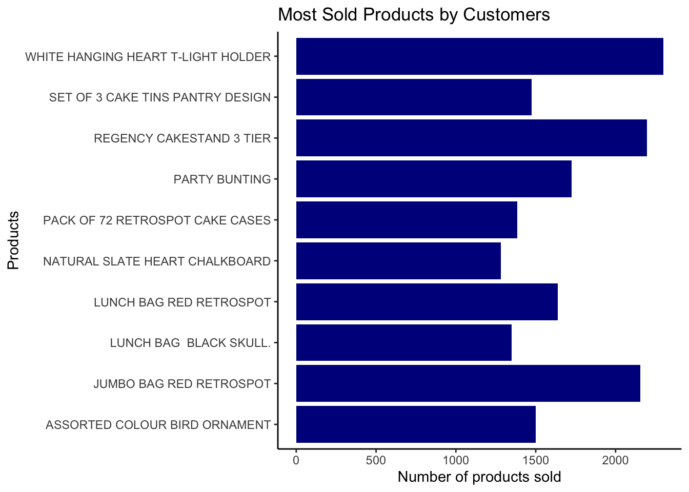
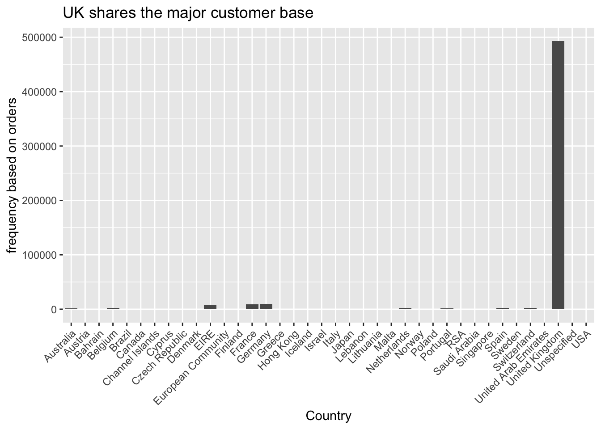
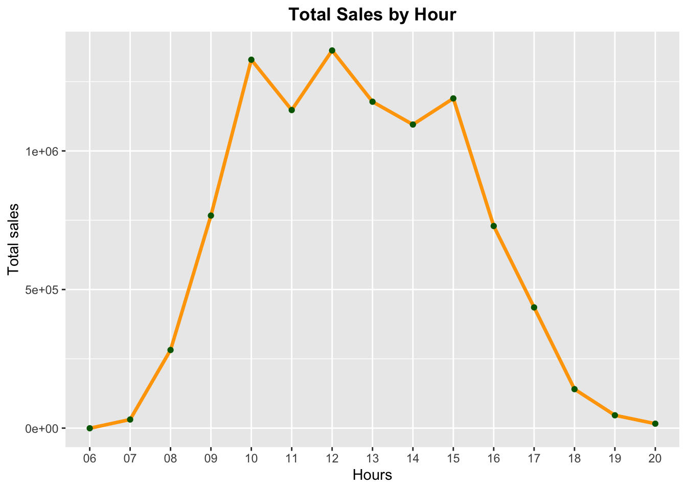
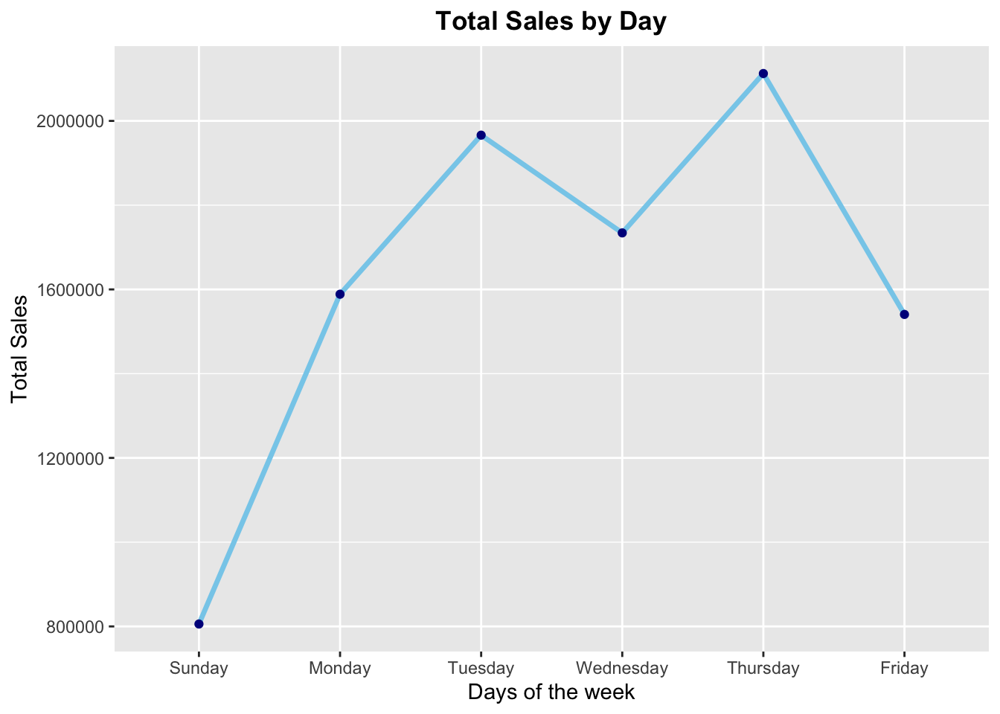
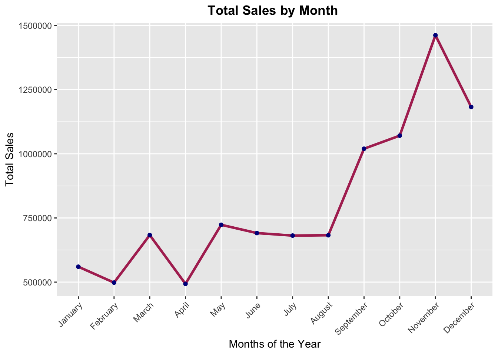
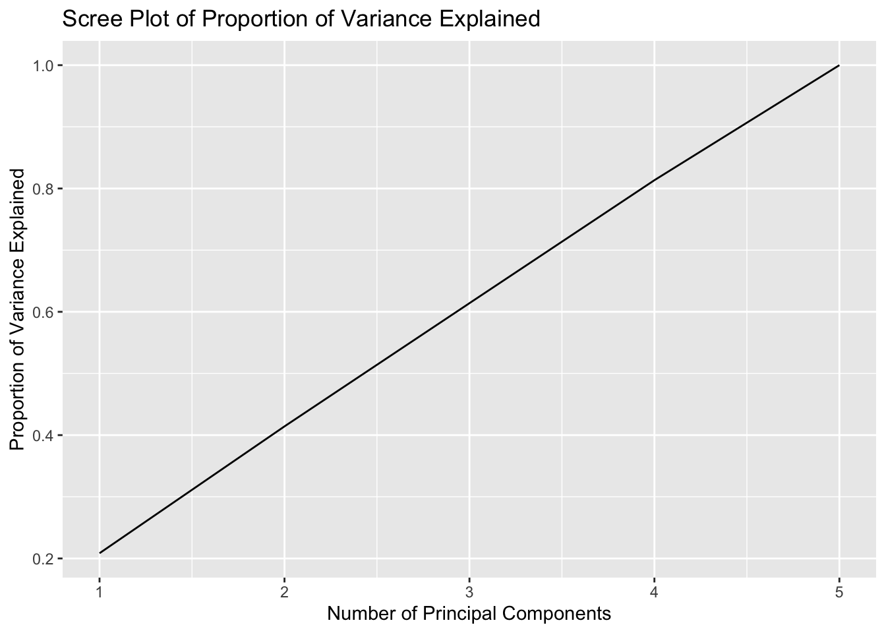

IMLV Final Project
2023-04-30
Chapter 1 Proposal Descriptions
1.1 About Dataset
Data: The data I am going to use in my final project is called Online Retail Data Set from UCI ML repo. Here’s the link for the dataset: https://archive.ics.uci.edu/ml/datasets/online+retail
Source: Dr Daqing Chen, Director: Public Analytics group. chend ‘@’ lsbu.ac.uk, School of Engineering, London South Bank University, London SE1 0AA, UK.
Information: This is a transnational data set which contains all the transactions occurring between 01/12/2010 and 09/12/2011 for a UK-based and registered non-store online retail.The company mainly sells unique all-occasion gifts. Many customers of the company are wholesalers.
1.2 Modeling Goal
Through this project, I would like to learn how sales will differ based on month, week, time, unit price and quantity. I will use three models to predict the sales, ranging from the least interpretable one(Random Forest) to the most(Linear Regression). By evaluating the accuracy of each model, this project will answer the following questions:
Do the models have concurrent or conflicting interpretations? Can you explain why?
Do some models offer more insight than others?
Is it worth losing interpretability/increasing model complexity? Can the simpler model do just as well? Why or why not?
To what extent is it possible to answer your questions of interest with the models you have chosen? What are their limitations?
1.4 Read data from Excel file
After loading the data, use summary() to get an overview of it.
## InvoiceNo StockCode Description Quantity
## Length:541909 Length:541909 Length:541909 Min. :-80995.00
## Class :character Class :character Class :character 1st Qu.: 1.00
## Mode :character Mode :character Mode :character Median : 3.00
## Mean : 9.55
## 3rd Qu.: 10.00
## Max. : 80995.00
##
## InvoiceDate UnitPrice CustomerID
## Min. :2010-12-01 08:26:00.00 Min. :-11062.06 Min. :12346
## 1st Qu.:2011-03-28 11:34:00.00 1st Qu.: 1.25 1st Qu.:13953
## Median :2011-07-19 17:17:00.00 Median : 2.08 Median :15152
## Mean :2011-07-04 13:34:57.16 Mean : 4.61 Mean :15288
## 3rd Qu.:2011-10-19 11:27:00.00 3rd Qu.: 4.13 3rd Qu.:16791
## Max. :2011-12-09 12:50:00.00 Max. : 38970.00 Max. :18287
## NA's :135080
## Country
## Length:541909
## Class :character
## Mode :character
##
##
##
## ## InvoiceNo StockCode Description Quantity InvoiceDate UnitPrice
## 0 0 1454 0 0 0
## CustomerID Country
## 135080 0There are many NAs in the column CustomerID. Since this column is irrelavent to our analysis, we can simply remove it.
1.5 Data Cleaning
Remove NULL values from the data, and reprint the summary of the data.
## InvoiceNo StockCode Description Quantity
## Length:539394 Length:539394 Length:539394 Min. :-80995.00
## Class :character Class :character Class :character 1st Qu.: 1.00
## Mode :character Mode :character Mode :character Median : 3.00
## Mean : 9.85
## 3rd Qu.: 10.00
## Max. : 80995.00
## InvoiceDate UnitPrice Country
## Min. :2010-12-01 08:26:00.0 Min. :-11062.06 Length:539394
## 1st Qu.:2011-03-28 11:59:00.0 1st Qu.: 1.25 Class :character
## Median :2011-07-20 11:50:00.0 Median : 2.08 Mode :character
## Mean :2011-07-04 16:40:48.7 Mean : 4.63
## 3rd Qu.:2011-10-19 11:49:00.0 3rd Qu.: 4.13
## Max. :2011-12-09 12:50:00.0 Max. : 38970.001.6 Data pre-processing
I changed the description and country column to factor, and did the datetime processing. In particular, I extracted the column InvoiceDate, separating out four new columns: date, month, week, and time. The Sales column is then calculated using Quantity and UnitPrice.
## # A tibble: 6 × 12
## InvoiceNo StockCode Descri…¹ Quant…² InvoiceDate UnitP…³ Country date
## <chr> <chr> <fct> <dbl> <dttm> <dbl> <fct> <chr>
## 1 536365 85123A WHITE H… 6 2010-12-01 08:26:00 2.55 United… 12/0…
## 2 536365 71053 WHITE M… 6 2010-12-01 08:26:00 3.39 United… 12/0…
## 3 536365 84406B CREAM C… 8 2010-12-01 08:26:00 2.75 United… 12/0…
## 4 536365 84029G KNITTED… 6 2010-12-01 08:26:00 3.39 United… 12/0…
## 5 536365 84029E RED WOO… 6 2010-12-01 08:26:00 3.39 United… 12/0…
## 6 536365 22752 SET 7 B… 2 2010-12-01 08:26:00 7.65 United… 12/0…
## # … with 4 more variables: month <chr>, week <chr>, time <chr>, Sales <dbl>,
## # and abbreviated variable names ¹Description, ²Quantity, ³UnitPrice1.7 Exploratory Data Analysis
1.7.1 Most sold Products
 The bar plot above depicts the top ten most popular products on this online retail website. According to the plot, the most popular product is the ‘White Hanging Heart T-Light Holder,’ with approximately 2500 units sold. The products ‘Regency Cakestand 3 Tier’ and ‘Jumbo Bag Red Retrospot’ are also popular on the online retail website.
1.7.2 Costomer base across the countries

Given that almost all users are from the United Kingdom, it would be nearly impossible to predict sales using the country factor. As a result, we will remove the country column from this project.
1.7.3 Total Sales by Hour
Note that the original dataset does not include sales information from 9 p.m. to 6 a.m. It is possible that this is due to website maintenance, or someone may have excluded this data due to the low number of sales during those hours.

The line graph depicts total sales by hour. The majority of sales occur between 10 a.m. and 3 p.m. This makes logical because people are more active during this time period. It’s worth noting that this line plot is quite symmetric. People are less likely to buy in the early morning and late at night.
1.7.4 Total Sales by Day
AS mentioned before, the dataset does not include sales information of Saturday due to similar reasons.
 The line plot Total Sales by Day depicts costomers’ shopping habit. Sales are higher form Monday to Thursday, while sales drops significantly on Friday and weekends.
1.7.5 Total Sales by Month

This line plot depicts the month-to-month change in online retail sales. The figure shows that sales are high from September to December. The peak month is November. This figure makes sense because there are numerous festivities from September through December, such as Christmas, Thanksgiving, and New Year’s. We can deduce that people shop for gifts online. Another trend in the figure is a significant dip in January, and total sales for the remainder of the year are relatively low. It is most likely due to limited budgets and a lack of festivals from January to August.
1.8 Change Categorical to Numerical
## Quantity UnitPrice month week time
## Quantity 1.000000000 -0.0013182520 -0.0013951922 -0.001704601 -0.011389930
## UnitPrice -0.001318252 1.0000000000 -0.0005349981 -0.007358089 0.001305487
## month -0.001395192 -0.0005349981 1.0000000000 0.040133430 0.025958983
## week -0.001704601 -0.0073580891 0.0401334297 1.000000000 -0.033158359
## time -0.011389930 0.0013054875 0.0259589828 -0.033158359 1.000000000I converted categorical data to numerical data in this stage. For example, ‘December’ equals 12, ‘Monday’ equals 1, and so on. The variables are next checked for multicollinearity by calculating the correlations between them. Except for the diagnal, the values in the above table are very low. As a result, we concluded that all of the variables are unrelated, and we should keep them.
1.9 Checking for Principal Components
## Importance of components:
## PC1 PC2 PC3 PC4 PC5
## Standard deviation 1.0210 1.0142 0.9996 0.9986 0.9658
## Proportion of Variance 0.2085 0.2057 0.1998 0.1994 0.1865
## Cumulative Proportion 0.2085 0.4142 0.6140 0.8135 1.0000
The Scree plot is almost a linear curve, that means we have good choice of dependent variables.